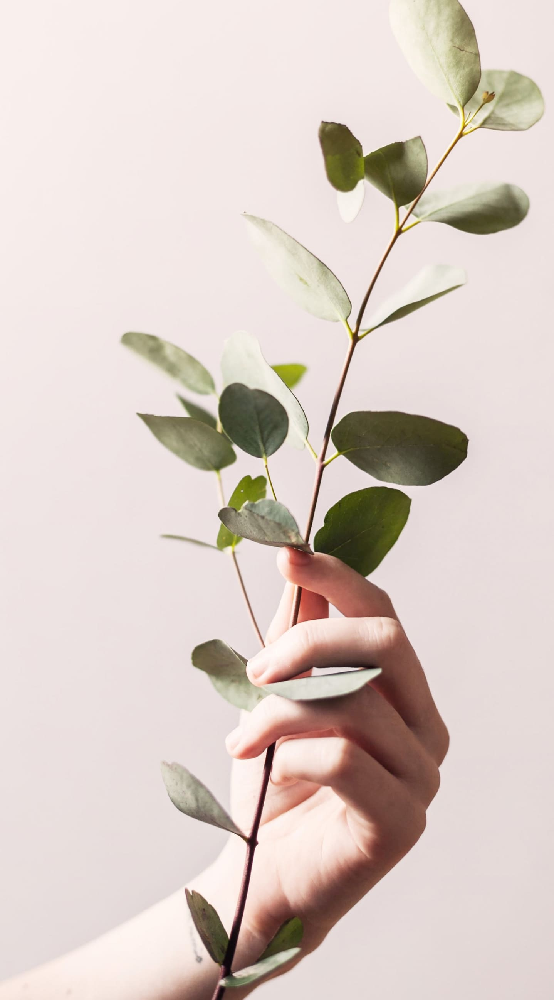

6
ROKU
入会 : 54期（2025年3月入会）
年齢 : 35歳
誕生日 : 9月7日
血液型 : O型
出身 : 愛知
居住 : 愛知
趣味 : アニメ鑑賞、ゲーム、四柱推命
仕事 : リハビリ職
好きなアニメ : ガンダムシリーズ、PSYCHO-PASS、物語シリーズ
好きな香り : 塩素、ゼラニウム、ティーツリー
好きな食べ物 : レバ刺し
苦手なこと : 目立つこと、人前で話すこと
ひとこと : 初めてのチーム開発を楽しみたいです。